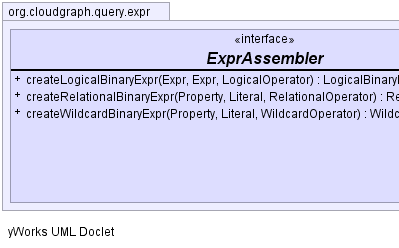
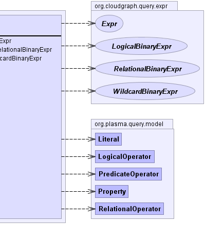

public interface ExprAssembler
expression implementations.Expr|  |  |
| Modifier and Type | Method and Description |
|---|---|
LogicalBinaryExpr |
createLogicalBinaryExpr(Expr left,
Expr right,
LogicalOperator operator)
Creates and returns a logical binary expression based on the
given terms and logical
operator.
|
RelationalBinaryExpr |
createRelationalBinaryExpr(Property property,
Literal literal,
RelationalOperator operator)
Creates and returns a relational binary expression based on the
given terms and relational
operator.
|
WildcardBinaryExpr |
createWildcardBinaryExpr(Property property,
Literal literal,
WildcardOperator operator)
Creates and returns a wildcard binary expression based on the
given terms and wildcard
operator.
|
RelationalBinaryExpr createRelationalBinaryExpr(Property property, Literal literal, RelationalOperator operator)
property - the property termliteral - the literal termoperator - the relational operatorWildcardBinaryExpr createWildcardBinaryExpr(Property property, Literal literal, WildcardOperator operator)
LogicalBinaryExpr createLogicalBinaryExpr(Expr left, Expr right, LogicalOperator operator)
CloudGraph® is a registered trademark of TerraMeta Software, Inc. Copyright © 2014 - All Rights Reserved.